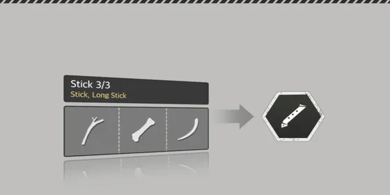
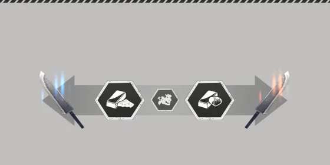

Home › Gathering & Crafting
 Crafting Live
Crafting Live
Craft tools, weapons and clothes and process materials — recipes, workbenches, success chance and failure, product level, Processing Chances and desulfurizing metal with seashells
Some sections on this page are not ready yet
What you gather becomes tools, weapons, clothes, food and building parts. Many materials must be processed first (trimmed, smelted, tanned, dried …) before the next recipe accepts them. The level and attributes of your materials carry over into what you make.

What you can do
- Craft tools, weapons, clothes, bags, medicine and more from the Craft menu
- Process materials — the same item is upgraded (it gets a mark showing it was processed) so it fits the next recipe
- Leave work on a workbench — put a job on the table and go do something else (unattended crafting)
- Cook — see Cooking and Preserving food
- Structures use Plans — see Building
How to craft Live
- Open the Craft menu and pick a Recipe
- Put Materials into each slot — each slot shows which tags/attributes and levels it needs; items that don't qualify can't be selected
- Some recipes need you to stand next to the right kind of Workbench, or to hold a specific tool
- Wait for the progress bar to fill, then collect your item
- Recipes unlock by learning Skills · recipe books, and some recipes/Plans unlock by themselves once your Crafting Ability in that category is high enough (the mastery ladder)
- Crafting Ability never blocks a recipe — you can always try. Instead it sets your success chance: the Expected Result window shows the recipe's Difficulty, the success rate and the Flawless Rate before you craft — the same numbers the server rolls with
Recipe books Live
Some patterns/blueprint books (from packages, events or older items) can be used from your bag to learn a recipe or blueprint permanently, no skill needed
- One book is used · the recipe shows up in the Craft menu / the blueprint in the Build menu right away, and you can really craft it
- If you already know it (from a skill or an earlier book) — a message says so and the book is kept
| Book | Gives |
|---|---|
| House Party Glazed Meat Pattern · Fruit Sandwich Pattern · Booster Jelly Pattern | cooking recipe |
| Civilized Two-Handed Axe Pattern · Civilized Lance Pattern · Civilized Bow Pattern | weapon recipe |
| Restore Torn Plan · Linked Rainbow Scales Pattern | processing recipe |
| Sturdy Gift Box Blueprint · Leather / Wood Floor Road Sign Pattern · Low / High Hedge Pattern | building blueprint |
Halloween books and recipes Not ready
During the Halloween event (20 Oct – 10 Nov) checking in gives 2 books — the Halloween Costume Pattern and the Halloween Hat Pattern (items 3–4 in the order of gifts on odd calendar slots, once per character) · using them teaches the Spooky Skull Costume and Spooky Skull Hat recipes permanently
- Your first check-in during the event (any slot) or the first reward at score step 200 → unlocks 10 event recipes permanently: Halloween Candy · Pumpkin Porridge · Pumpkin Cake · Witch Juice · Witch Jelly · Spider Skewer · Witch Sausage · Spider Cookie · Pumpkin Hat · Spooky Skull Hammer — you can keep crafting them after the event ends
- The event's pumpkin and spider-tree seeds are covered in Farming
- Event recipes give no special experience
Key numbers Live
| Topic | Value |
|---|---|
| Normal crafting time | 2 s (skills can shorten it · minimum 0.5 s) |
| Processing time | per recipe, at most 20 s |
| Stamina used | 5 per craft |
| Fatigue | crafting adds none — so «Crafting Fatigue Reduction» has no effect for now |
| Success chance | 100% when your Crafting Ability ≥ the Difficulty · lower below it — see Success and failure |
| Flawless Success | usually 10% · up to 30% with buffs — see Flawless Success chance |
| Product level | average level of all materials, rounded down (capped at the recipe's max level) |
| Level of a processed item | same as the original item |
Flawless Success puts a «Flawless Success» mark on the item · +10% max durability · processing recipes give +1 level to the attributes they add · recipes that make a brand-new item give it 1 extra Processing Chance (for example armor 3 → 4) · ×1.5 experience
Experience Live
Each craft gives experience in the recipe's skill category (Weapon/Tool Crafting · Tailoring · Cooking · Build · Processing) based on the product level compared with your category level — the same table as Gathering. A big failure gives half of that (and half the character experience) · crafting quests don't count it.
Bundling (leaves / sticks) and Trimmed Material give Build category experience instead of Processing (same amount) — other processing recipes such as planks, charcoal, hinges and pillars are still Processing · a Flawless result on these two therefore counts toward the weekly Build quests rather than the Processing ones.
Success and failure Live
Every craft is rolled against the recipe's Difficulty (shown in the Expected Result window — it grows with the product level) and your Crafting Ability in the recipe's category:
gap = Difficulty − Crafting Ability (0 when your ability is higher)
success chance = 1 − (gap ÷ 100)²| Result | Chance | What happens |
|---|---|---|
| Success | 1 − (gap ÷ 100)² | you get the item — it may be a Flawless Success |
| Failure | (gap ÷ 100)² − (gap ÷ 100)³ | the game shows it as a success and you get the item, but no Flawless Success and no bonus items · weapons, tools, clothes and accessories start at 70% of max durability (repair brings them back to full) · food and materials are not affected |
| Big failure | (gap ÷ 100)³ | the game says «Crafting Failed» · no item · you lose gap % of the materials, the rest go back to your bag (the same pieces) · Stamina and time are not refunded · half experience |
- Recovery rate — mastery ladder steps in 8 crafting categories give recovery rate (+10%, +15%, +20%, +30% per step): materials lost on a big failure × (1 − recovery rate) · at most 90% recovered · Farming has none
- Which pieces are lost is random — per slot, count × loss share, and any fraction is a chance to lose one more piece
- Dyeing and bleaching recipes ignore ability and always succeed · so do recipes with no Difficulty
- Unattended crafting rolls when you place the job — on a big failure nothing is put on the workbench
- Until 24 Sep every craft succeeded; the original formula is now in use
Examples
Weapon recipes · ability = the Crafting Ability value (for example «10» = a Lv10 character with no bonuses) · each cell = success · big failure · materials lost on a big failure
Recipes whose Difficulty = 1 × item level (some handles and bone blades)
| Crafting Ability | Item Lv10 (Difficulty 10) | Item Lv30 (Difficulty 30) | Item Lv60 (Difficulty 60) |
|---|---|---|---|
| 10 | 100% | 96% · 0.8% · 20% | 75% · 12.5% · 50% |
| 30 | 100% | 100% | 91% · 2.7% · 30% |
| 50 | 100% | 100% | 99% · 0.1% · 10% |
| 60 | 100% | 100% | 100% |
Recipes whose Difficulty = 1.75 × item level (improved metal axe heads and similar)
| Crafting Ability | Item Lv10 (Difficulty 17.5) | Item Lv30 (Difficulty 52.5) | Item Lv60 (Difficulty 105) |
|---|---|---|---|
| 10 | 99.4% · 0.04% · 7.5% | 81.9% · 7.7% · 42.5% | 9.8% · 85.7% · 95% |
| 30 | 100% | 94.9% · 1.1% · 22.5% | 43.8% · 42.2% · 75% |
| 60 | 100% | 100% | 79.8% · 9.1% · 45% |
| 100 | 100% | 100% | 99.8% · 0.01% · 5% |
Before 24 Sep: 100% success in every cell, no materials lost. Material loss here is before any recovery rate.
Crafting Ability counts every source Live
The ability used for the roll is the same number your character screen shows: skills · mastery ladder · titles · item attributes · item modifiers · food buffs · house ambiance. The mastery ladder uses that number too — a ladder step reached thanks to gear stays yours after you take the gear off. The «Crafting Ability Buff» attribute adds to all 9 crafting abilities (Weapon Crafting · Tailoring · Sewing · Handicraft · Metal Processing · Cooking · Furniture Crafting · Building · Farming). More on these numbers in Stats.
Flawless Success chance Live
- Base 10% · an ability far above the Difficulty raises it — Weapon Crafting and Tailoring up to about 17%, Furniture Crafting and Building up to about 13%, other categories stay at 10%
- Buffs that raise the Flawless Crafting Rate add on top — for example the house ambiance «Fragrant Spring» +4% (10% → 14%) · total cap 30%
- A failure or big failure is never Flawless
| Weapon Crafting Ability \ Difficulty | 5 | 15 | 30 | 45 | 60 | 105 |
|---|---|---|---|---|---|---|
| 100 | 10% | 10% | 10% | 10% | 10% | 10% |
| 150 | 14.5% | 13.5% | 12% | 10.5% | 10% | 10% |
| 180 | 17.4% | 16.2% | 14.4% | 12.6% | 10.8% | 10% |
Unattended crafting at a workbench Live
- Supported recipes (such as smelting ore and desulfurizing metal at a kiln) can be left on a Workbench — materials are taken right away and the item waits on the table until the time is up
- Each recipe has its own wait time (at least 5 s) · a full workbench takes no more jobs
- A workbench, kiln, campfire or drying rack on someone else's Domain needs all of Use + Give + Take to craft, place or collect jobs (otherwise the buttons are greyed out) — see Domain
- Workbenches, stoves, kilns and drying racks built to level 60 get 1 extra slot (at least the level-59 slot count + 1)
- A workbench built from a material with «Splits Easily» may get «More Space» (+1 slot) or «Shorter Duration» (−5% unattended time) — see Item attributes
- You can't skip the wait with gems — the job has to finish
Processing materials Live

Most processing doesn't turn the item into a new one — it adds tags/attributes to the same piece, and the next recipe checks those tags (a few recipes also change the kind, such as Refined Ore and Gem Extraction — level, colour and attributes carry over). Examples:
| Recipe | Takes | Result |
|---|---|---|
| Trimmed Material | bone, stone, wood | trimmed tag → usable for blades/handles |
| Compressed Material | a trimmed item + water | processed tag + extra attributes |
| Refined Ore | ore + charcoal | becomes the metal of that ore, e.g. Iron Ore → Iron (a normal chunk — a Big Chunk of ore from a Flawless gather also smelts into a normal chunk) |
| Desulfurized Metal | metal chunk + 2 charcoal + 2 seashells | gains «High Purity» |
| Gem Extraction | Gemstone + water | becomes the gem of the same kind |
| Fine / Rough Gem Polishing | gem + Seashell / Horseshoe Crab Shell | gives a «Polished Gem» + raises that gem's own colour luster |
| Dry Leather | leather / fur | gains «Dried» |
| Fiber-Tanned Material | dried leather + bark + leaves | tans the leather · removes bad smell |
| Waterproofed Material | leather / fabric + fat | gains «Waterproof» |
| Long Strap | 2 strings (vines, thread or sinew also work) | long-string tag → can make bowstrings |
| Plank | a pillar/log | becomes a plank |
Smelting gives metal Live
Smelting ore with Refined Ore at a kiln gives the metal named after the ore:
| Ore | You get |
|---|---|
| Iron Ore | Iron |
| Copper Ore | Copper |
| Tin Ore | Tin |
| Zinc Ore | Zinc |
| Gold Ore | Gold |
| Silver Ore | Silver |
- Black Iron Ore and Lead Ore have no separate metal in the original game — they keep their name after smelting but count as smelted and still work in alloys
- The ore's level, colour and attributes carry over to the metal · gear made from smelted metal gets metal durability
- Ore smelted before 10 Oct 2026 has been converted to metal
Extracting and polishing gems Live
A Gemstone (the raw gem you mine) needs 2 steps before you can use it:
- Gem Extraction at a workbench with a hammer (Gemstone + water) → the gem of the same kind: Ruby · Sapphire · Emerald · Amethyst · Diamond · Topaz — gems of level 50+ make a Gem Necklace · an extracted gem can't be extracted again
- Fine Gem Polishing (+ Seashell) or Rough Gem Polishing (+ Horseshoe Crab Shell) at a Gem Crafting Bench with a knife → a Polished Gem (level 50+ makes Crafting Glasses) and that gem's own colour luster goes up
| Luster added | Normal | Great success | Failure |
|---|---|---|---|
| Fine polishing | +2 | +3 | +1 |
| Rough polishing | +1 | +4 | +0 |
- Luster starts at 1, max 25 · colour by kind: Ruby = Red Luster · Sapphire = Blue Luster · Emerald = Green Luster · Amethyst = Purple Luster · Diamond = White Luster · Topaz = Yellow Luster
- You can polish again as long as the piece has processing chances left
- Gemstones extracted before 10 Oct 2026 have been converted to gems · gems polished before got their own colour luster by the number of times polished
- Coming: what each luster colour does, and bonuses for the glasses made from polished gems — they give no bonus yet (Clothing and accessories)
Processing Chances Live
- Every item has Processing Chances — usually 3 · ore 5 · ordinary leather 4 (pelt and armor leather 3) · a Flawless gather adds more (effects)
- A Flawless craft of a recipe that makes a brand-new item gives the product 1 extra Processing Chance
- Recipes that show the line «Processing Chance Consumed» use 1 chance from the item in the main slot — 77 recipes: almost all processing recipes + 8 regular recipes (their product inherits the main item's remaining chances −1)
- Dyeing does not use a chance (the resulting color is an even 50/50 mix of the old color and the dye) · bleaching uses 1
- At 0 the item can't be processed any more — the game says so (server message in Thai)
- Modifying gear costs Modification Slots instead of Processing Chances
Desulfurizing metal with seashells Live

The pure-metal chain: ore → Refined Ore (ore + charcoal) → Desulfurized Metal (metal chunk + 2 charcoal + 2 seashells) → the metal chunk gains «High Purity»
- The level of «High Purity» equals the item's level — 17 recipes for advanced metal blades and metal bow/crossbow stocks ask for level 35 or 55
- «Waterproof» (Waterproofed Material) and «Dried» (drying recipes) follow the same rule
- Metal you desulfurized before this fix works right away — no need to redo it
Attributes that carry over Live
The material in the main slot passes its attributes on to what you craft at every step, with nothing rolled away — with several pieces in the main slot the attribute level is averaged (rounded down), while a green attribute needs only one piece · the Expected Result window shows the attributes the product will get before you start — details in Item attributes.
Repair
Tools and weapons wear out with use; repair them with a Repair Kit or T Stone — see Decay and repair.
Recipes adjusted to the sheet Live
15 recipes now match the DurangoFAQ community recipe table. The in-game recipe screen shows the new values after you return to the title screen or log in again (until then, if it still shows the old values, use the new ones).
| Item | Before | Now |
|---|---|---|
| Handle | Stick ×2 | Stick ×1 |
| Bone Work Axe · Bone Work Knife | no workbench | Workbench Lv40 |
| Bone Work Hammer | no workbench · Bone Stick ×2 | Workbench Lv40 · Bone Stick ×1 |
| Metal Saw · Metal Shovel | Dried Leather Strap ×2 · Handle ×2 | Dried Leather Strap ×1 · Handle ×1 |
| Skull Bow Limb | max level 59 | max level 60 |
| Seagull Bone Bow Limb | max level 59 · Tanned Leather ×2 | max level 60 · Tanned Leather ×1 |
| Standard Bow | Rope ×2 | Rope ×1 |
| Wooden Crossbow Limb | max level 59 · Trimmed Wood Pillar ×2 | max level 39 · Trimmed Wood Pillar ×1 |
| Bone Crossbow Limb | max level 59 | max level 60 |
| Metal Blade | Kiln Lv35 | Workbench Lv15 |
| Large Iron Thunderbird Axe Head | Trimmed Horn ×2 · Metal Nail ×3 | Trimmed Teeth ×2 · Metal Nail ×2 |
| Large Angled Metal Axe Head II | Cord ×4 | Trimmed Obsidian ×4 |
| Weapon Workbench (building) | Processed Plank Shape ×8 | Trimmed Plank Shape ×8 (Lv50) |
All other recipes already matched the sheet and are unchanged · the Weapon Workbench now has a model you can see on the map.
Recipes made possible by species-specific materials Not ready
Items butchered from animals or taken from traps are now named after their species (Names that show where an item came from), and 7 recipes that used to be impossible can now be made:
| Recipe / structure | Species-specific material it asks for |
|---|---|
| Andrewsarchus Leather Rug | Andrewsarchus leather (dried, then tanned) |
| Mini Compy Bean Bags (2 kinds) | Compsognathus leather ×15 · Compsognathus tooth ×5 |
| Brachio Tooth Necklace | Brachio tooth (trimmed) |
| Wolf Fur Hat | White wolf leather (dried then tanned — it stays white wolf leather) |
| Tanning with White Sabertooth oil | White Sabertooth fat ×8 |
| Inflammation Antidote | Root (from the Bird of Paradise) |
The meat of some animals works as the stamina ingredient of Mochi, Meat Skewers and Ginseng Chicken Soup · house parts (roof, wall, floor) crafted from materials with a known origin pass that origin on to the house, so the patterns on the house follow the material
Tips
Crafting and other actions can't overlap Live
Starting another timed action (such as gathering or washing) while a craft is in progress cancels that craft, and its materials are not used · unattended crafting left on a workbench is not affected and keeps going · full rule on Gathering.